Texto extraído da edição fornecida, sem atualização normativa. Consulte a página original para conferir tabelas, formulários e instruções ilustradas. A numeração dos links corresponde à página do arquivo PDF.
Esta página contém conteúdo gráfico. Consulte a reprodução original abaixo.
Ver página original — tabelas, imagens e diagramas
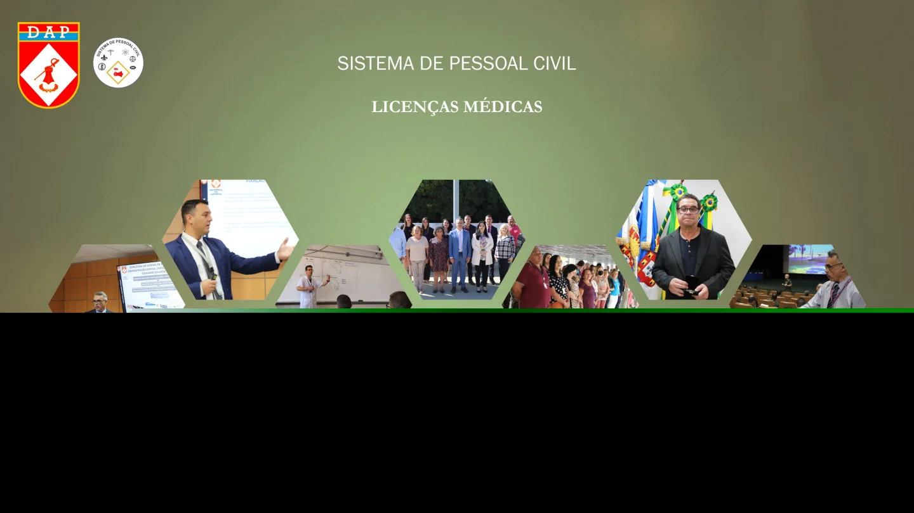
Conceitos e legislação
PDF · p. 2PARTE I
CONCEITOS E
LEGISLAÇÃO
Caderno de Orientação DAP - 06.002 - LICENÇAS MÉDICAS – 1ª Edição 2024
Ver página original — tabelas, imagens e diagramas
Conceitos e legislação
PDF · p. 3Caderno de Orientação DAP - 06.002 - LICENÇAS MÉDICAS – 1ª Edição 2024
Licença para Tratamento de Saúde (LTS): é a licença concedida a servidor
ativo, ocupante de cargo efetivo ou em comissão, quando esse for
acometido de doença que não lhe permita exercer as atividades do cargo,
sendo possível sua concessão a pedido ou de ofício, sem prejuízo de sua
remuneração, conforme a legislação vigente.
Licença por acidente em serviço: Configura acidente em serviço o dano físico ou
mental sofrido pelo servidor, que se relacione, mediata ou imediatamente, com as
atribuições do cargo exercido.
Equipara-se ao acidente em serviço o dano:
a) decorrente de agressão sofrida e não provocada pelo servidor no exercício do
cargo;
b) sofrido no percurso da residência para o trabalho e vice-versa.
Ver página original — tabelas, imagens e diagramas
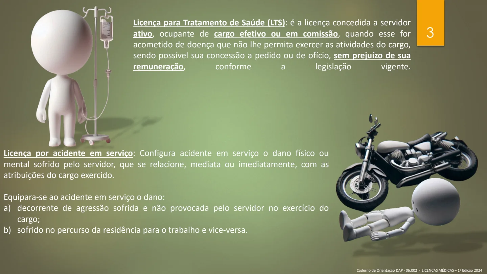
Conceitos e legislação
PDF · p. 4Caderno de Orientação DAP - 06.002 - LICENÇAS MÉDICAS – 1ª Edição 2024
Licença por acidente em serviço: estar em exercício efetivo no cargo
ocupado e ter sofrido danos (lesão corporal, perturbação funcional ou
doença que determine a perda total ou parcial, permanente ou
temporária, da capacidade laborativa) resultantes do exercício do
trabalho, no ambiente de trabalho ou fora dele, a serviço da
Administração Pública Federal.
Licença à adotante: é a licença remunerada concedida ao (à) servidor (a),
independente de gênero, que adotar ou obtiver guarda judicial de criança.
Licença à gestante: É a licença concedida à servidora efetiva, ou à contratada
temporariamente, pelo nascimento de filhos.
Licença paternidade: é a licença concedida ao servidor em decorrência de
nascimento ou adoção de filho.
Ver página original — tabelas, imagens e diagramas
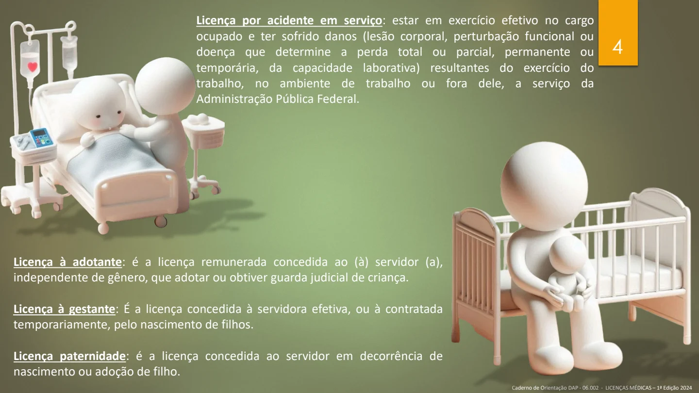
Conceitos e legislação
PDF · p. 5Lei nº 8.112, de 11 de
dezembro de 1990
Portaria SEGRT/MP
nº 19, de 20 de abril de
2017
Portaria - C Ex nº
1.783, de 29 de junho de
2022
Manual de Perícia
Oficial em Saúde
do Servidor Público
Federal - 2010
Orientação
Normativa SRH-MP nº
2 de junho de 2005 – para
LTS e Licença por acidente
em serviço
É dever do servidor/empregado público, da Organização Militar (OM) e da Região Militar (RM) ler e
acompanhar a atualização da legislação que se refere aos assuntos tratados neste Caderno de
Orientação.
Cabe ao gestor da unidade de gestão de pessoas, acompanhar as comunicações constantes do órgão
central do SIPEC (“COMUNICA”), no SIAPE.
Caderno de Orientação DAP - 06.002 - LICENÇAS MÉDICAS – 1ª Edição 2024
Ver página original — tabelas, imagens e diagramas
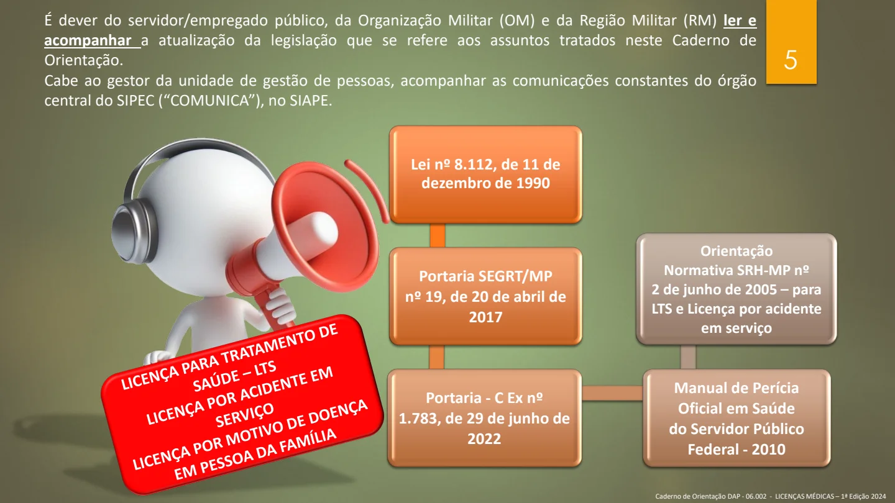
Conceitos e legislação
PDF · p. 6Lei nº 8.112, de 11 de
dezembro de 1990
Nota Técnica nº
162, de 2 de novembro
de 2014
Nota Técnica SEI/ME nº
18585, de 5 de maio de
2021
Parecer nº
003/2016/CGU/AGU, de
30 de novembro de
2016
Ofício-Circular nº
14, de 3 de fevereiro de
2017
É dever do servidor/empregado público, da Organização Militar (OM) e da Região Militar (RM) ler e
acompanhar a atualização da legislação que se refere aos assuntos tratados neste Caderno de
Orientação.
Cabe ao gestor da unidade de gestão de pessoas, acompanhar as comunicações constantes do órgão
central do SIPEC (“COMUNICA”), no SIAPE.
Caderno de Orientação DAP - 06.002 - LICENÇAS MÉDICAS – 1ª Edição 2024
Ver página original — tabelas, imagens e diagramas
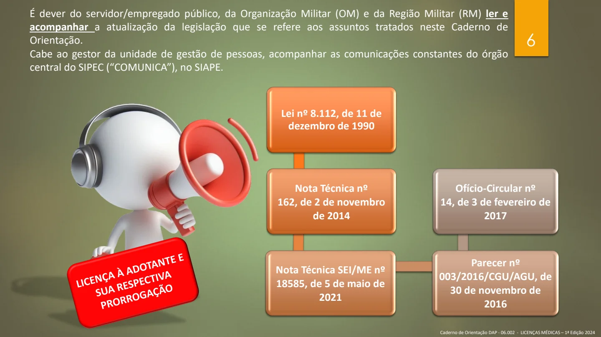
Conceitos e legislação
PDF · p. 7Lei nº 8.112, de 11 de
dezembro de 1990
Orientação
Normativa SRH nº
02, de 23 de fevereiro de
2011 - Art. 5º, § 2º, inciso
I
Orientação
Consultiva nº 035/ DENOR
/SRH/MARE, de 31 de
março de 1998
Nota Técnica nº
121, de 13 de agosto
de 2014
Nota Técnica nº
324, de 4 de outubro
de 2012
Nota Técnica nº 365,
15 de abril de 2010
Nota Técnica SEI/ME
nº 18585, de 5 de
maio de 2021
Nota Informativa nº
759, de 25 de
setembro de 2012
É dever do servidor/empregado público, da Organização Militar (OM) e da Região Militar (RM) ler e
acompanhar a atualização da legislação que se refere aos assuntos tratados neste Caderno de
Orientação.
Cabe ao gestor da unidade de gestão de pessoas, acompanhar as comunicações constantes do órgão
central do SIPEC (“COMUNICA”), no SIAPE.
Caderno de Orientação DAP - 06.002 - LICENÇAS MÉDICAS – 1ª Edição 2024
Ver página original — tabelas, imagens e diagramas
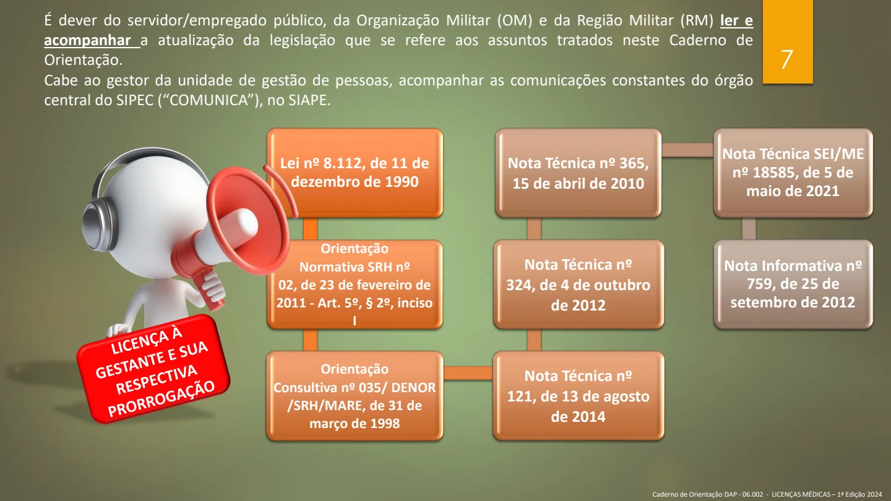
Conceitos e legislação
PDF · p. 8Lei nº 8.112, de 11 de
dezembro de 1990
Nota Técnica
16295, de 18 de novembro de
2016
Nota Técnica nº
2978, de 5 de outubro de 2016
Nota Técnica SEI/ME nº 18585,
de 5 de maio de 2021
É dever do servidor/empregado público, da Organização Militar (OM) e da Região Militar (RM) ler e
acompanhar a atualização da legislação que se refere aos assuntos tratados neste Caderno de
Orientação.
Cabe ao gestor da unidade de gestão de pessoas, acompanhar as comunicações constantes do órgão
central do SIPEC (“COMUNICA”), no SIAPE.
Caderno de Orientação DAP - 06.002 - LICENÇAS MÉDICAS – 1ª Edição 2024
Ver página original — tabelas, imagens e diagramas
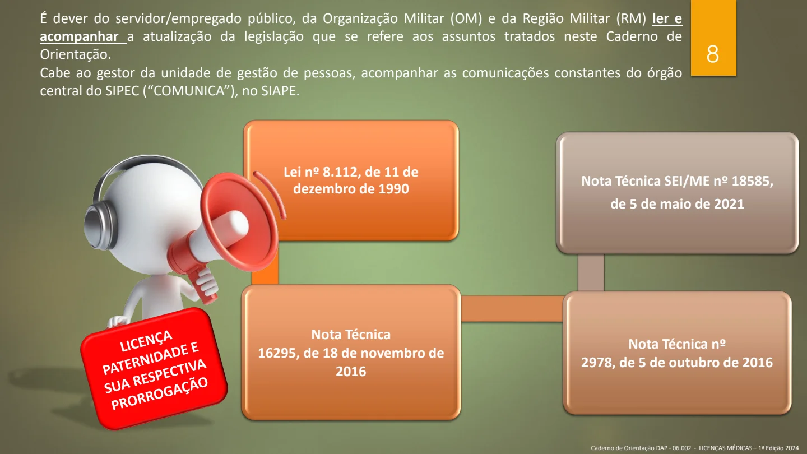
Requisitos básicos
PDF · p. 9PARTE II
DOS
REQUISITOS
BÁSICOS
Caderno de Orientação DAP - 06.002 - LICENÇAS MÉDICAS – 1ª Edição 2024
Ver página original — tabelas, imagens e diagramas
Requisitos básicos
PDF · p. 10Caderno de Orientação DAP - 06.002 - LICENÇAS MÉDICAS – 1ª Edição 2024
1. LICENÇA PARA TRATAMENTO DE SAÚDE (LTS):
Apresentação de
atestado médico ou
odontológico, contendo
identificação do servidor
e do profissional
emitente, o registro
deste no conselho de
classe e o tempo
provável de afastamento.
Acesso ao Portal SouGov
para apresentação do
atestado no prazo
máximo de cinco dias
corridos contados da
data do início do
afastamento do servidor.
Envio de uma cópia do atestado à unidade de
lotação do servidor para arquivamento em
seu Assentamento Funcional Digital (AFD).
Ver página original — tabelas, imagens e diagramas
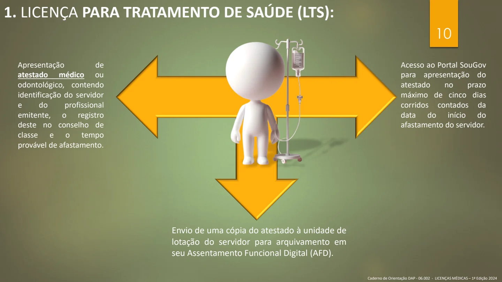
Requisitos básicos
PDF · p. 11Caderno de Orientação DAP - 06.002 - LICENÇAS MÉDICAS – 1ª Edição 2024
Somente será deferida se
a assistência pessoal do
servidor for
indispensável e não
puder ser prestada,
simultaneamente, com
o exercício do cargo ou
mediante compensação
de horário, sendo vedado
o exercício de atividade
remunerada durante o
período da licença.
2. LICENÇA POR MOTIVO DE DOENÇA EM PESSOA DA FAMÍLIA:
Apresentação do atestado no prazo máximo de 5 (cinco) dias
corridos contados da data do início do afastamento do servidor.
Para acompanhamento de
cônjuge ou companheiro,
dos pais, dos filhos, do
padrasto/ madrasta e
enteado, ou dependente
que viva a suas expensas e
CONSTE do seu
assentamento funcional,
mediante comprovação
por perícia médica oficial
Ver página original — tabelas, imagens e diagramas
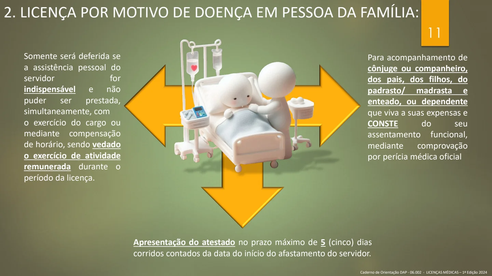
Requisitos básicos
PDF · p. 12Caderno de Orientação DAP - 06.002 - LICENÇAS MÉDICAS – 1ª Edição 2024
Estar em exercício efetivo no cargo ocupado e ter sofrido
danos (lesão corporal, perturbação funcional ou doença
que determine a perda total ou parcial, permanente ou
temporária, da capacidade laborativa) resultantes do
exercício do trabalho, no ambiente de trabalho ou fora
dele, a serviço da Administração Pública Federal.
Nascimento/adoção de filho (a)
4. LICENÇA À ADOTANTE, À GESTANTE E PATERNIDADE
3. LICENÇA POR ACIDENTE EM SERVIÇO
Ver página original — tabelas, imagens e diagramas
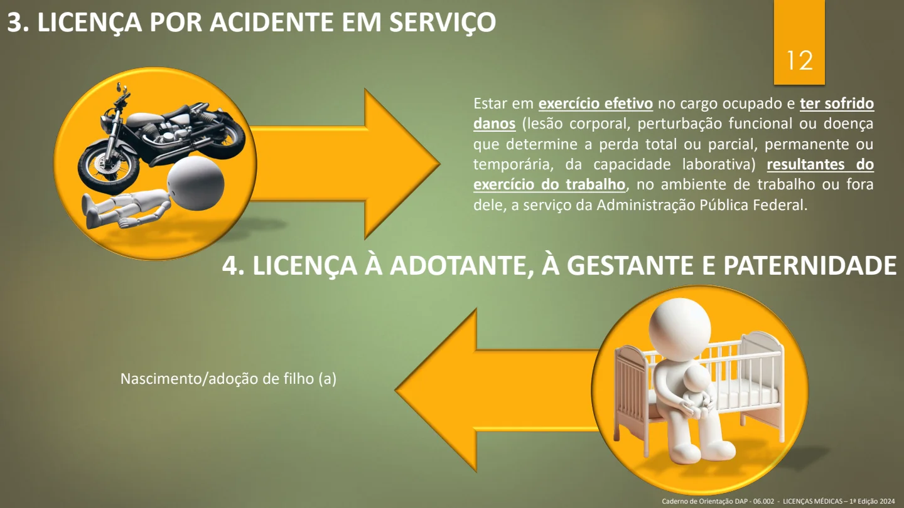
Informações gerais
PDF · p. 13PARTE III
INFORMAÇÕES
GERAIS
Caderno de Orientação DAP - 06.002 - LICENÇAS MÉDICAS – 1ª Edição 2024
Ver página original — tabelas, imagens e diagramas
Envio de atestado no SouGov
PDF · p. 14Caderno de Orientação DAP - 06.002 - LICENÇAS MÉDICAS – 1ª Edição 2024
Siga o passo a passo¹ e veja como incluir e
enviar seu atestado de saúde no SOUGOV.BR:
(OBS: caso você tenha mais de um vínculo, é
sempre importante observar se está no
vínculo desejado. Na setinha ao lado de
Órgão – Uorg – Matrícula, você pode
verificar e fazer alteração, se for o caso).
Na página inicial do SOUGOV.BR, aplicativo
ou web, em AutoAtendimento, clique em
"Minha Saúde" depois em "Atestado" e, na
próxima tela, selecione em "Incluir":
¹Fonte: https://www.gov.br/servidor/pt-br/acesso-a-informacao/faq/sou-gov.br/minha-saude/atestado/1-como-incluir-atestado-de-saude-no-aplicativo-sou-gov-br
INFORMAÇÕES APLICÁVEIS A TODOS OS TIPOS DE
LICENÇAS MÉDICAS
01
Se tiver dúvidas sobre como acessar o SouGov.BR, acesse
o link: https://www.gov.br/servidor/pt-br/acesso-a-
informacao/faq/sou-gov.br/acesso/SOUGOV.BR
PARA INCLUIR O ATESTADO NO APP DO SouGov:
Ver página original — tabelas, imagens e diagramas
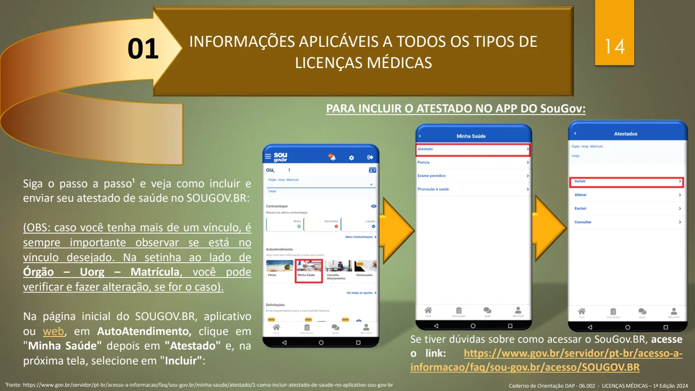
Envio de atestado no SouGov
PDF · p. 15Caderno de Orientação DAP - 06.002 - LICENÇAS MÉDICAS – 1ª Edição 2024
O procedimento para inclusão e envio de atestado
é composto por 4 etapas:
Enviar
atestado
1
Inserir
dados do
atestado
2
Inserir
dados
adicionais
3
4 Conferência
Ver página original — tabelas, imagens e diagramas
Envio de atestado no SouGov
PDF · p. 16Caderno de Orientação DAP - 06.002 - LICENÇAS MÉDICAS – 1ª Edição 2024
Enviar
atestado
1 Para incluir o atestado de saúde, clique no ícone :
Lembre-se: GUARDE o
original de seu atestado
médico para ser
apresentado em uma
eventual perícia.
Ver página original — tabelas, imagens e diagramas
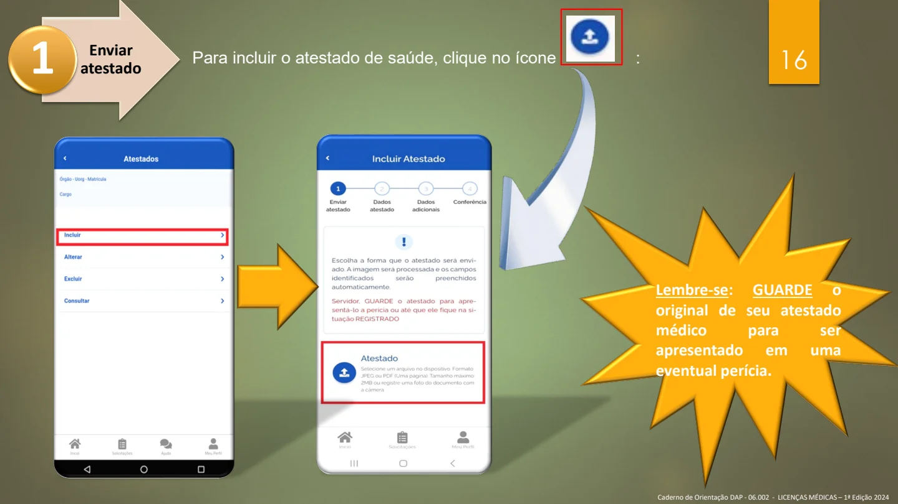
Envio de atestado no SouGov
PDF · p. 17Caderno de Orientação DAP - 06.002 - LICENÇAS MÉDICAS – 1ª Edição 2024
Inserir
dados do
atestado
2
Nesta etapa, CONFIRA se os dados obtidos da
imagem do seu atestado de saúde estão
completos.
Caso os dados estejam incompletos ou
diferentes dos que estão em seu atestado, faça
as correções necessárias ANTES de enviá-lo.
Não esqueça de preencher
todos os campos que
contenham asterisco
vermelho, pois eles são de
preenchimento obrigatório.
Clique em "Próximo":
Ver página original — tabelas, imagens e diagramas
Envio de atestado no SouGov
PDF · p. 18Caderno de Orientação DAP - 06.002 - LICENÇAS MÉDICAS – 1ª Edição 2024
Inserir
dados
adicionais
3
Em "Dados adicionais" serão apresentados os seguintes campos:
Telefone
Campo de preenchimento obrigatório.
O número apresentado é aquele presente no seu cadastro, caso
deseje, outro número poderá ser incluído.
Importante: mantenha o número de telefone atualizado, pois esse
será o número que a unidade SIASS ou a sua OM entrarão em
contato com você.
Demais Campos
Observe que alguns itens só devem ser marcados caso:
a) Houver indícios que o afastamento é decorrente de um acidente
em serviço ou de moléstia profissional, pois será obrigatória a
avaliação pericial, independentemente da qualidade de dias de
afastamento;
b) Esteja fora da sua localidade de exercício;
c) O periciando (servidor ou seu familiar) esteja internado e sem
previsão de alta ou impossibilitado de locomoção. É necessário
anexar a declaração médica, no caso de incapacidade de
locomoção ou uma declaração médica/hospitalar em caso de
internação.
Tabela 1: Dados adicionais:
Ver página original — tabelas, imagens e diagramas
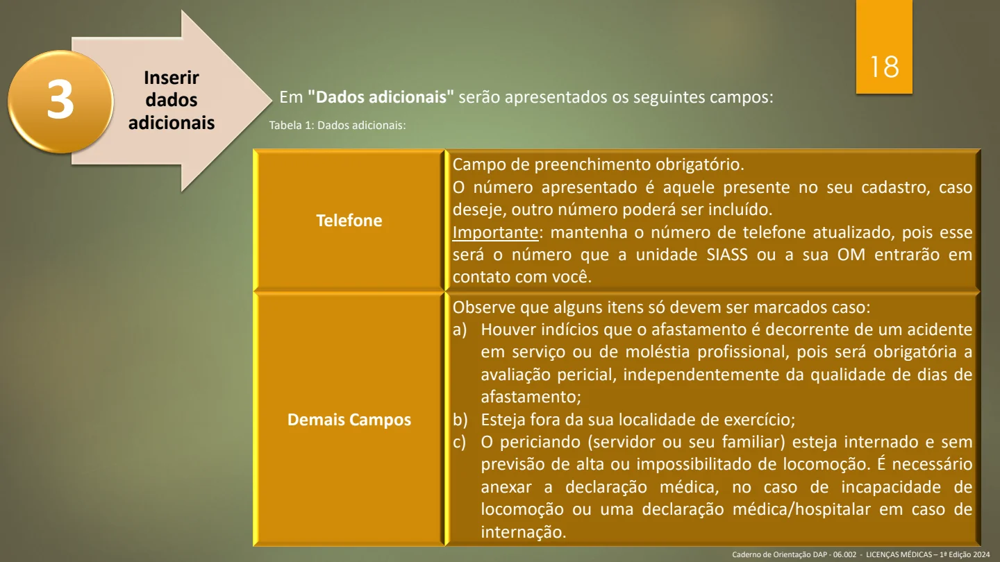
Envio de atestado no SouGov
PDF · p. 19Caderno de Orientação DAP - 06.002 - LICENÇAS MÉDICAS – 1ª Edição 2024
Inserir
dados
adicionais
3 (cont.)
Preencha o campos "DDD" e "Telefone
Contato".
Leia atentamente os itens seguintes e
marque-os, conforme o caso:
Ver página original — tabelas, imagens e diagramas
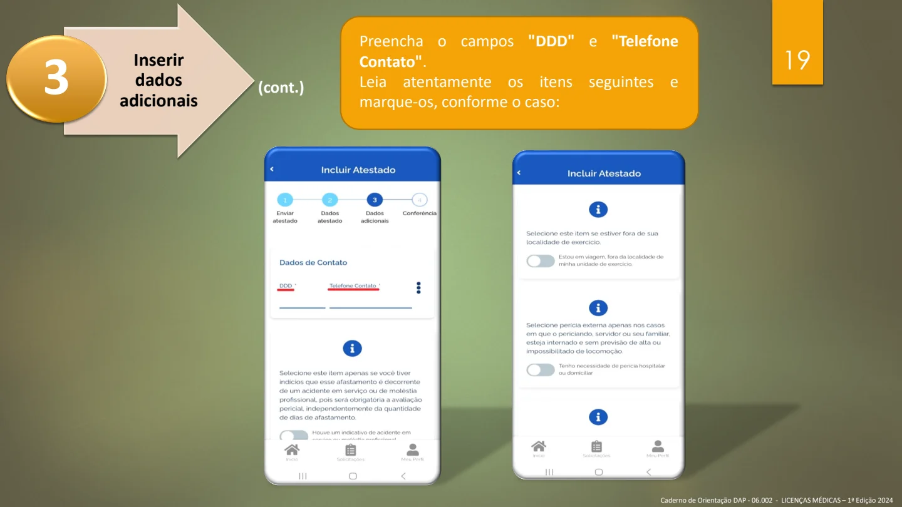
Envio de atestado no SouGov
PDF · p. 20Caderno de Orientação DAP - 06.002 - LICENÇAS MÉDICAS – 1ª Edição 2024
Inserir
dados
adicionais
3 (cont.)
Ao final da tela, selecione uma
alternativa. Uma mensagem será
apresentada, marque "Confirmar".
Clique em "Próximo" para dar
continuidade à ação de inclusão de
atestado:
1. Marque uma opção
2. Clique em próximo
Ver página original — tabelas, imagens e diagramas
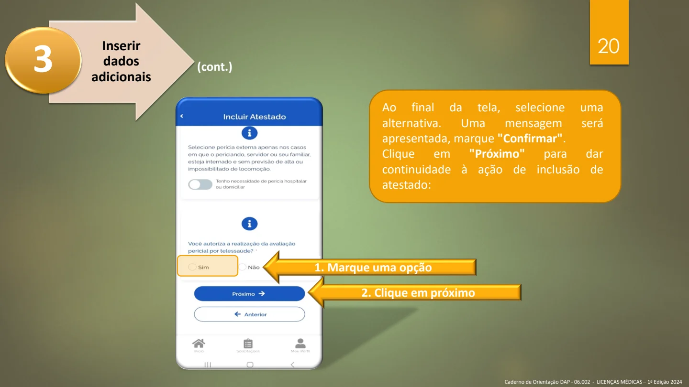
Envio de atestado no SouGov
PDF · p. 21Caderno de Orientação DAP - 06.002 - LICENÇAS MÉDICAS – 1ª Edição 2024
Conferência
4
Confira se todos os
dados estão corretos
e veja para qual
Unidade será enviado
seu atestado de
saúde, depois clique
em "Enviar":
Ver página original — tabelas, imagens e diagramas
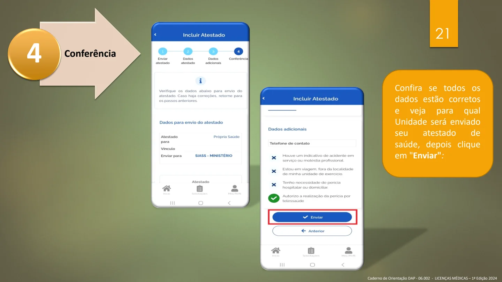
Envio de atestado no SouGov
PDF · p. 22Caderno de Orientação DAP - 06.002 - LICENÇAS MÉDICAS – 1ª Edição 2024
Conferência
4
(cont.)
Uma mensagem será apresentada para que você possa incluir
documentos complementares para avaliação pericial como,
por exemplo, receituário, resultado e/ou laudo de exame.
PASSO À PASSO:
1. Selecione "Incluir
documentos", caso
não tenha, clique em
"Não possuo
documento".
2. Se possuir
documentação, clique
em "Anexar
Documentos":
Ver página original — tabelas, imagens e diagramas
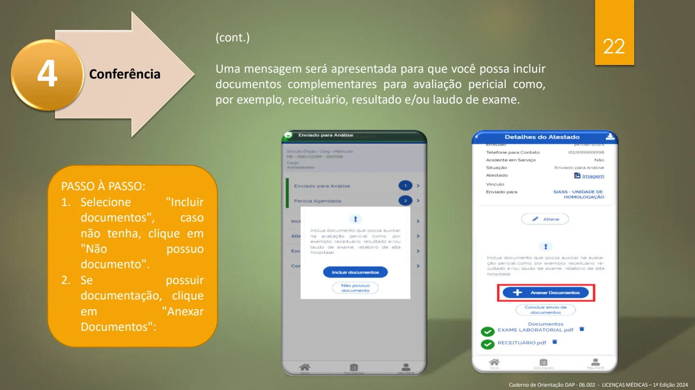
Envio de atestado no SouGov
PDF · p. 23Caderno de Orientação DAP - 06.002 - LICENÇAS MÉDICAS – 1ª Edição 2024
Pronto! Seu atestado de
saúde e documentação
completar, caso exista, foram
enviados para análise da
Unidade de Gestão de
Pessoas do qual você está
vinculado(a):
Ver página original — tabelas, imagens e diagramas
Impossibilidade de acesso ao SouGov
PDF · p. 24Caderno de Orientação DAP - 06.002 - LICENÇAS MÉDICAS – 1ª Edição 2024
Na IMPOSSIBILIDADE de acesso à
plataforma SouGov.br, o servidor
deve seguir os passos listados na
Parte V - DA TRAMITAÇÃO INTERNA,
deste Caderno de Orientações.
O servidor deverá comunicar,
imediatamente, à OM sua
impossibilidade de comparecer ao
serviço, devendo apresentar o atestado,
no prazo de 5 (cinco) dias corridos,
contado da data do início do
afastamento do servidor.
A data do atestado fornecido deverá
coincidir com a do início da
dispensa médica e do dia que o
servidor foi atendido.
Não serão aceitos documentos com
data retroativa.
Ver página original — tabelas, imagens e diagramas
Homologação e perícia
PDF · p. 25Caderno de Orientação DAP - 06.002 - LICENÇAS MÉDICAS – 1ª Edição 2024
O atestado será objeto de homologação SEM perícia oficial
quando a licença for inferior a 15 (quinze) dias corridos ou
quando somada a outras licenças gozadas nos 12 (doze) meses
anteriores, seja inferior a quinze dias.
Qualquer licença que EXCEDER o período supramencionado será submetido à
avaliação da perícia oficial singular ou por junta médica oficial, quando for o caso.
A dispensa de perícia oficial, não se aplica aos ocupantes de cargo em comissão.
O comparecimento à consulta, tratamento, procedimento ou exames de saúde não gera
licença. É necessária a apresentação à chefia imediata, do atestado de comparecimento,
emitido pelo profissional de saúde, como justificativa ao afastamento. A compensação do
horário está sujeita avaliação da chefia, conforme a legislação em vigor.
Ver página original — tabelas, imagens e diagramas
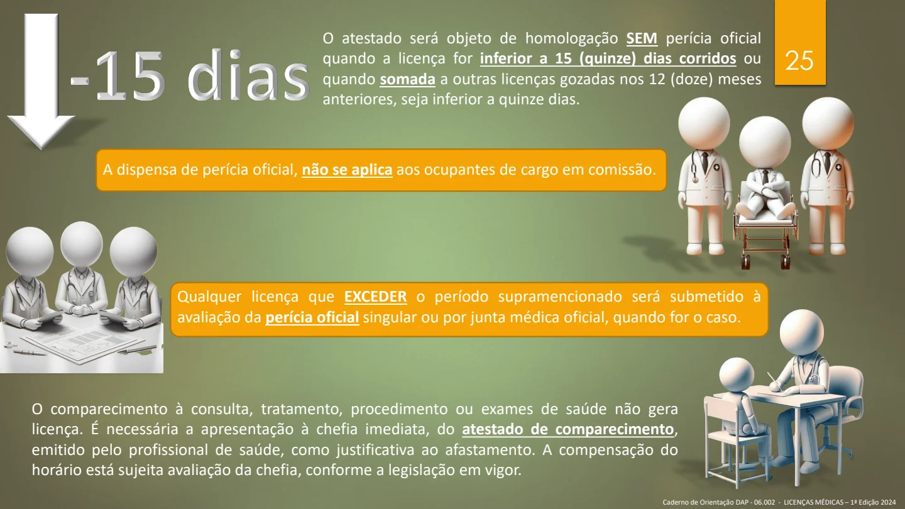
Cargo em comissão sem vínculo efetivo
PDF · p. 26Caderno de Orientação DAP - 06.002 - LICENÇAS MÉDICAS – 1ª Edição 2024
SOBRE O SERVIDOR OCUPANTE
DE CARGO EM COMISSÃO,
SEM VÍNCULO EFETIVO (CCE):
• Deve ser submetido à perícia oficial em todos os seus afastamentos.
• Será segurado obrigatório da Previdência Social, sendo responsabilidade
do Instituto Nacional do Seguro Social - INSS, mediante requerimento do
interessado, quando o afastamento do trabalho por problemas de saúde,
gravidez ou acidente do trabalho for superior a quinze dias.
• Os afastamentos superiores a 15 (quinze) dias implicam na imediata
suspensão da remuneração do servidor, a partir do décimo-sexto dia,
enquanto perdurar o afastamento, não cabendo qualquer despesa ou
compensação para o Regime Próprio de Previdência do Servidor.
• Em gozo de benefício concedido pelo INSS, terá o seu vínculo mantido
com a Administração enquanto durar o seu afastamento, não fazendo
jus, entretanto, à percepção de remuneração decorrente do cargo
comissionado que ocupa durante o pagamento do benefício.
Ver página original — tabelas, imagens e diagramas
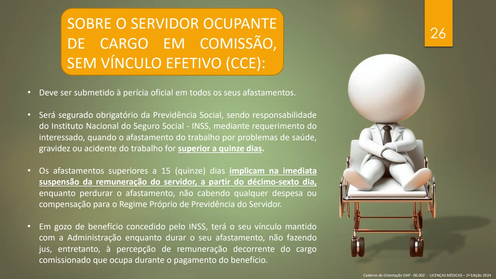
Tratamento de saúde
PDF · p. 27LICENÇA PARA TRATAMENTO DE SAÚDE (LTS) 27
02
Caderno de Orientação DAP - 06.002 - LICENÇAS MÉDICAS – 1ª Edição 2024
Será concedida ao servidor, a pedido ou de ofício:
ATÉ 120 (cento e vinte) dias no período
de doze meses a contar do primeiro dia
de afastamento
Por perícia oficial singular¹
Por mais de 120 (cento e vinte) dias Mediante avaliação por junta oficial
¹A perícia deve ser solicitada pelo servidor no prazo de cinco dias contados da
data de início do seu afastamento.
O atestado deverá ser encaminhado, por meio de plataforma digital do Governo
federal, no prazo de 5 (cinco) dias corridos, contado da data do início do
afastamento do servidor (conforme item 1, da Parte III, deste Caderno).
A não apresentação do atestado no prazo de 5 (cinco) dias corridos, salvo por motivo justificado, caracterizará falta ao serviço.
Na impossibilidade de locomoção do servidor, a avaliação pericial será realizada
no estabelecimento hospitalar, onde ele se encontrar internado, ou em domicílio.
Tabela 2: LTS:
Ver página original — tabelas, imagens e diagramas
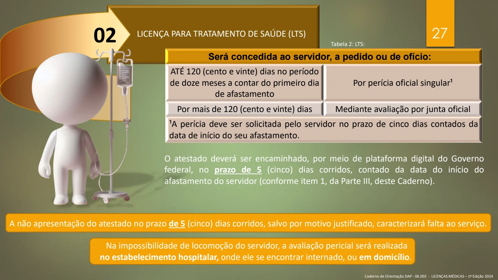
Doença em pessoa da família
PDF · p. 28LICENÇA POR MOTIVO DE DOENÇA EM PESSOA
DA FAMÍLIA: 28
03
Caderno de Orientação DAP - 06.002 - LICENÇAS MÉDICAS – 1ª Edição 2024
A licença por motivo de doença em pessoa da família, será precedida de exame por perícia médica
oficial, deverá seguir os ritos das Normas Técnicas sobre as Perícias Médicas no Exército (NTPMEX)
(EB30-N-20.008).
Esta licença, incluídas as prorrogações, poderá ser concedida a cada
período de doze meses¹ nas seguintes condições:
por até 60 (sessenta) dias,
consecutivos ou não mantida a remuneração do servidor
por até 90 (noventa) dias,
consecutivos ou não sem remuneração
¹O início do interstício de 12 (doze) meses será contado a partir da data
do deferimento da primeira licença concedida.
A soma das licenças remuneradas e das licenças não remuneradas,
incluídas as respectivas prorrogações, concedidas em um mesmo período
de 12 (doze) meses, não poderá ultrapassar os limites de 60 ou 90 dias
Tabela 3: Licença por Motivo de Doença
em Pessoa da Família :
Ver página original — tabelas, imagens e diagramas
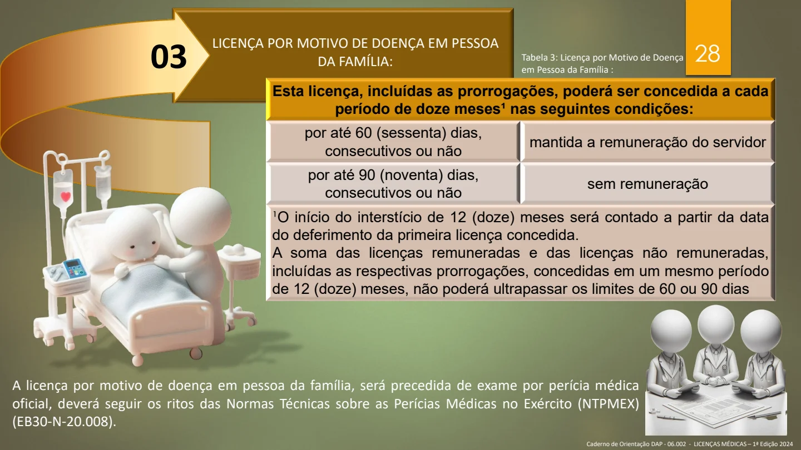
Doença em pessoa da família
PDF · p. 29Caderno de Orientação DAP - 06.002 - LICENÇAS MÉDICAS – 1ª Edição 2024
Cônjuge ou companheiro (a)
Mãe, pai, madrasta ou padrasto
Filhos e enteados
Dependente que viva às expensas do servidor
Para fins de concessão da Licença por
Motivo de Doença em Pessoa da Família
Ver página original — tabelas, imagens e diagramas
Doença em pessoa da família
PDF · p. 30Caderno de Orientação DAP - 06.002 - LICENÇAS MÉDICAS – 1ª Edição 2024
Para que o servidor possa ser beneficiado com a licença para
acompanhamento de pessoa da família, é necessário que o familiar
esteja cadastrado como seu dependente no seu assentamento
funcional, PARA ESTE FIM.
A inclusão de dependente é realizada no SouGov.br (Cadastro de
Dependente). Acesse o tutorial.
A perícia singular é obrigatória quando:
• o atestado para acompanhar familiar for igual ou superior a 15 (quinze) dias corridos; ou
• a soma dos afastamentos para acompanhamento familiar nos últimos 12 meses for de 15
(quinze) até 60 (sessenta) dias, corridos ou não; ou
• o atestado NÃO preencher os requisitos.
A perícia oficial poderá ser dispensada nos termos do art. 83 da Lei nº 8.112, de 1990,
desde que seja inferior a quinze dias corridos, mediante apresentação de atestado médico
ou odontológico, conforme o caso, que contenha justificativa quanto à necessidade de
acompanhamento por terceiro.
Ver página original — tabelas, imagens e diagramas
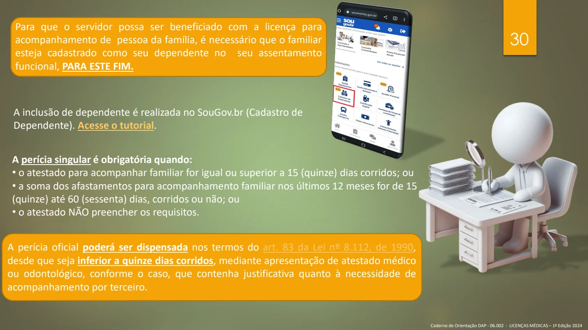
Acidente em serviço
PDF · p. 3104
Caderno de Orientação DAP - 06.002 - LICENÇAS MÉDICAS – 1ª Edição 2024
Licença por Acidente em Serviço:
Ao receber a informação da ocorrência de um acidente com seu subordinado, o
Comandante, Chefe ou Diretor deve adotar as seguintes providências:
a) instaurar sindicância, a fim de comprovar a existência de acidente em serviço e
apurar se o acidente resultou de transgressão disciplinar, imprudência, imperícia
ou desídia por parte do acidentado ou de subordinado do mesmo, com a sua
aquiescência;
b) caso seja comprovada a ocorrência de acidente em serviço, ouvir o médico
sobre a necessidade ou não da lavratura do Atestado de Origem (AO); e
c) publicar em Boletim Interno (BI) a lavratura do AO, se for o caso.
Ver página original — tabelas, imagens e diagramas
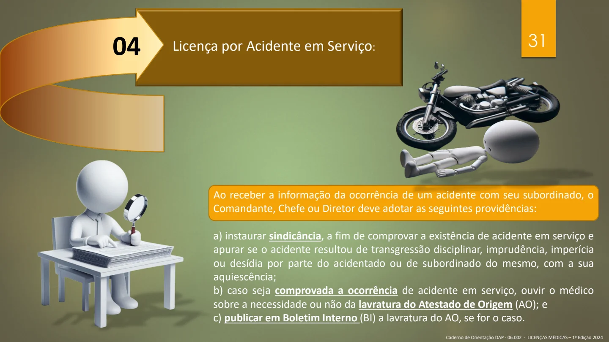
Acidente em serviço
PDF · p. 32Caderno de Orientação DAP - 06.002 - LICENÇAS MÉDICAS – 1ª Edição 2024
A prova do acidente será feita no prazo de 10 (dez) dias,
prorrogáveis quando as circunstâncias o exigirem.
O servidor acidentado em serviço será licenciado com remuneração integral.
A licença médica por incapacidade, decorrente de acidente em serviço
será concedida pela OM, mediante o atestado médico ou ata de inspeção de saúde.
Ver página original — tabelas, imagens e diagramas
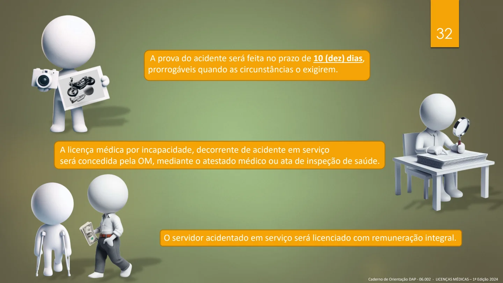
Acidente em serviço
PDF · p. 33Caderno de Orientação DAP - 06.002 - LICENÇAS MÉDICAS – 1ª Edição 2024
O servidor será submetido à inspeção médico-
pericial para definir se existe incapacidade
laborativa e estabelecer o nexo de causalidade
entre a incapacidade e o evento informado no
Atestado de Origem (AO), documento
administrativo.
Caso não exista o nexo e, se existir incapacidade laborativa, deverá ser concedida à licença para
tratamento de saúde. Os acidentes em serviço, em que as lesões resultantes sejam mínimas, não se
justificando, de acordo com o parecer do médico da OM, a lavratura do AO, deverão ser registrados no
Livro Registro de Acidente em Serviço da Seção de Saúde da OM (no SIRMED), descrevendo- se as lesões
sofridas, sendo também publicados em boletim interno e transcritos para as alterações dos acidentados.
Quando o acidente resultar de transgressão disciplinar, imprudência, imperícia ou desídia por parte do
acidentado, ou de subordinado do mesmo, com a sua aquiescência, ou de crime, não será lavrado o AO;
apenas publicando-se em BI. O acidente, e as lesões dele resultante, ficarão registrados no Livro Registro
de Acidente da Seção de Saúde da OM, constante do Sistema de Registros Médicos (SIRMED) disponível
no endereço eletrônico da Diretoria de Saúde (DSau).
BI
Ver página original — tabelas, imagens e diagramas
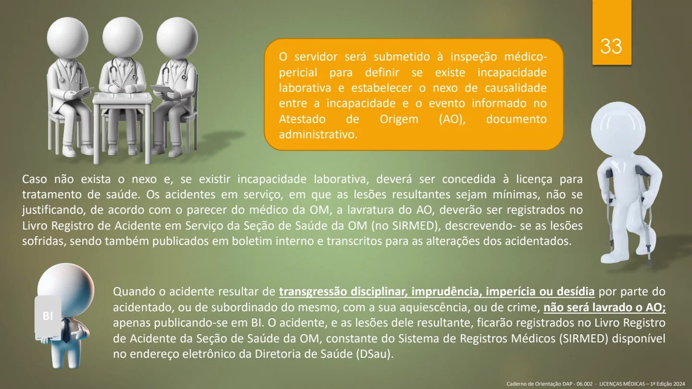
Atestado de Origem
PDF · p. 34Caderno de Orientação DAP - 06.002 - LICENÇAS MÉDICAS – 1ª Edição 2024
Sobre o Atestado de Origem (AO):
Parte Modelo Observações Prazo para
preenchimento
Prova Testemunhal Anexo A
1. é assinada pessoalmente, por duas
testemunhas, que deverão ter conhecimento
da exatidão dos fatos presenciados, tais como
local, data, hora, circunstâncias que cercaram
o acidente e natureza do serviço que a vítima
desempenhava no momento do acidente.
2. na situação excepcional em que não exista
prova testemunhal direta ou em que o número
de testemunhas seja inferior ao exigido,
valorizar-se-á a prova testemunhal indireta ou
referida constante da Sindicância, que será
anexada ao AO.
3. cabe ao comandante da subunidade ou chefe
direto do acidentado providenciar o
preenchimento da Prova Testemunhal.
ATÉ dez dias após a
publicação da solução
da Sindicância,
prorrogável por igual
período, por até duas
vezes, pelo
comandante, chefe ou
diretor da OM,
quando as
circunstâncias assim o
exigirem, sendo tal
fato publicado em
boletim interno.
Tabela 4: Atestado de Origem:
Ver página original — tabelas, imagens e diagramas
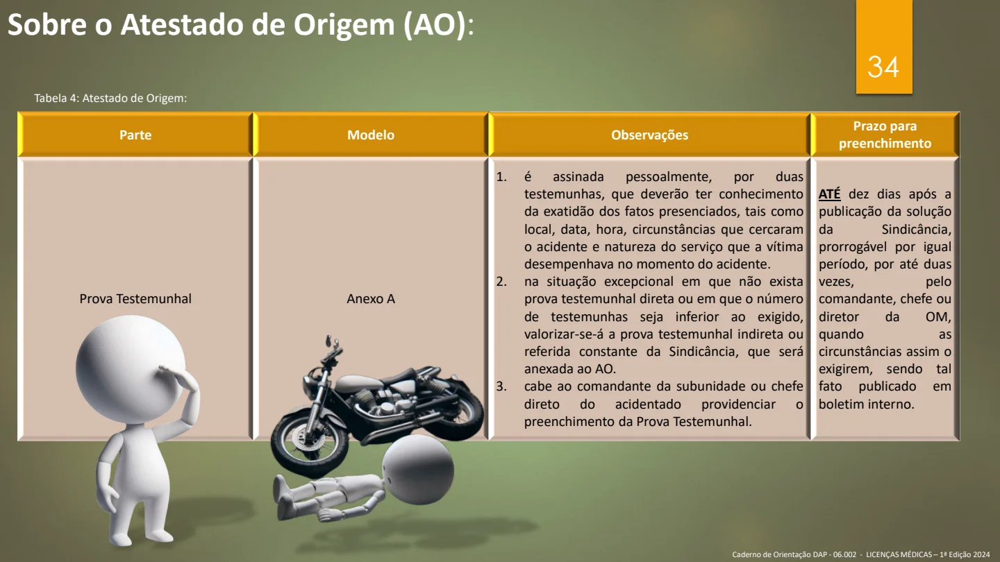
Atestado de Origem
PDF · p. 35Caderno de Orientação DAP - 06.002 - LICENÇAS MÉDICAS – 1ª Edição 2024
Sobre o Atestado de Origem (AO):
Parte Modelo Observações Prazo para
preenchimento
Prova Técnica Anexo B
1. preenchida pelo médico militar que primeiro
atender ao acidentado e consta de uma
descrição objetiva e detalhada das lesões ou
perturbações mórbidas, tal como se fora um
auto de exame de corpo de delito.
2. se não existir médico militar na localidade, a
prova técnica poderá ser preenchida por
médico civil, desde que solicitado pelo
comandante, chefe ou diretor da OM a que
pertencer o acidentado.
3. quando o acidente ocorrer em localidade
desprovida de médico, a prova técnica será
realizada pelo primeiro médico militar, ou civil,
do local para onde o acidentado for evacuado
e atendido.
4. o registro de atendimento de emergência
poderá servir de consulta para o
preenchimento da Prova Técnica por médico
militar, no caso descrito no item 4.
ATÉ dez dias após a
publicação da solução
da Sindicância,
prorrogável por igual
período, por até duas
vezes, pelo
comandante, chefe ou
diretor da OM,
quando as
circunstâncias assim o
exigirem, sendo tal
fato publicado em
boletim interno.
Tabela 4: Atestado de Origem (cont):
Ver página original — tabelas, imagens e diagramas
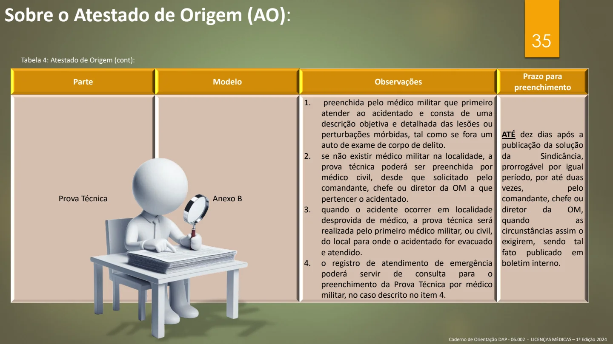
Atestado de Origem
PDF · p. 36Caderno de Orientação DAP - 06.002 - LICENÇAS MÉDICAS – 1ª Edição 2024
Sobre o Atestado de Origem (AO):
Parte Modelo Observações Prazo para preenchimento
Prova de Autenticidade Anexo C
É preenchida e assinada pelo Comandante, Chefe ou
Diretor da OM a que pertencer a vítima do acidente,
que deverá:
• reconhecer como autênticas as firmas das
testemunhas e do médico; e
• declarar a natureza do serviço de que a vítima se
incumbia no momento do acidente, o que souber
sobre os fatos constantes da prova testemunhal e
que não houve, por parte do acidentado,
imprudência, desídia, imperícia, prática de
transgressão disciplinar ou crime militar, conforme
a solução da sindicância ou Inquérito Policial
Militar (IPM).
ATÉ dez dias após a publicação
da solução da Sindicância,
prorrogável por igual período,
por até duas vezes, pelo
comandante, chefe ou diretor da
OM, quando as circunstâncias
assim o exigirem, sendo tal fato
publicado em boletim interno.
Tabela 4: Atestado de Origem (cont):
Ver página original — tabelas, imagens e diagramas
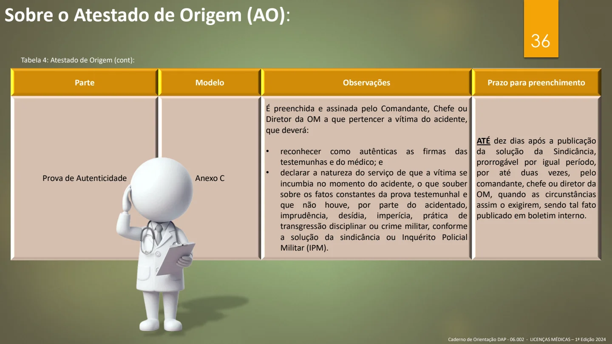
Atestado de Origem
PDF · p. 37Caderno de Orientação DAP - 06.002 - LICENÇAS MÉDICAS – 1ª Edição 2024
Sobre o Atestado de Origem (AO):
Parte Modelo Observações Preenchimento
Exame de Controle de
Atestado de Origem¹ Anexo D
1. Será procedido por Médico Perito de
Organização Militar (MPOM) ou
Médico Perito de Guarnição (MPGu).
2. Será composto de:
•identificação;
•observação clínica; e
•Parecer²
Prazo de ATÉ 60 (sessenta) dias após o
preenchimento completo das três primeiras
partes, por determinação do comandante,
chefe ou diretor do acidentado em serviço.
Tabela 4: Atestado de Origem (cont):
¹ O exame de controle será anexado ao AO, em local para esse fim destinado, conforme
modelo constante do Anexo D deste Caderno
² No parecer, deverá constar UMA das seguintes expressões:
1) “Há relação de causa e efeito entre o acidente sofrido e as condições mórbidas
atuais expressas pelos seguintes diagnósticos: (citar os diagnósticos, com CID e nunca
utilizar diagnóstico subjetivo (dor, náusea etc..) ”; ou
2) “Não há relação de causa e efeito entre o acidente sofrido e as condições mórbidas
atuais, expressas pelos seguintes diagnósticos: (citar os diagnósticos). Há (Não há)
vestígios anatômicos ou funcionais do acidente sofrido”.
Ver página original — tabelas, imagens e diagramas
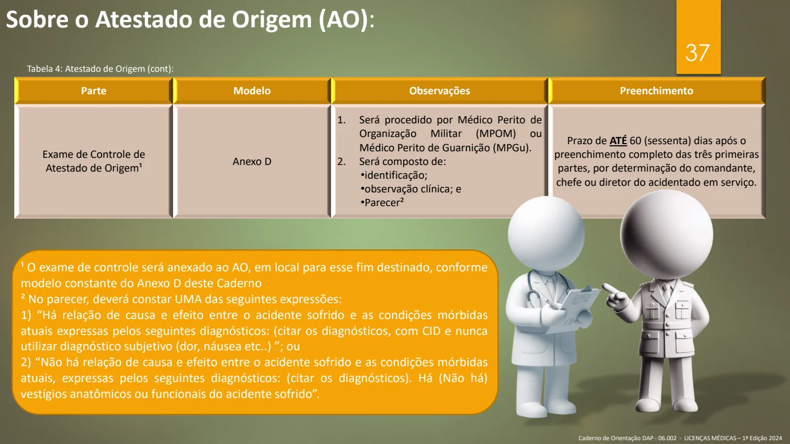
Licença à gestante
PDF · p. 3805 Licença à Gestante
Caderno de Orientação DAP - 06.002 - LICENÇAS MÉDICAS – 1ª Edição 2024
• A licença poderá ter início no primeiro dia do nono mês de gestação, salvo
antecipação por prescrição médica;
• Em caso de nascimento prematuro, a licença terá início a partir do parto;
• Em caso de natimorto, decorridos 30 (trinta) dias do evento, a servidora será
submetida a exame médico, e se julgada apta, reassumirá o exercício;
• No caso de aborto atestado por médico oficial, a servidora terá direito a 30
(trinta) dias de repouso remunerado;
Para saber como solicitar a licença, acesse o link: https://www.gov.br/servidor/pt-
br/acesso-a-informacao/faq/sou-gov.br/solicitacao-de-licenca-gestante-
paternidade-e-adotante/copy_of_1-como-solicitar-licenca-gestante-pelo-
aplicativo-sougov
Ver página original — tabelas, imagens e diagramas
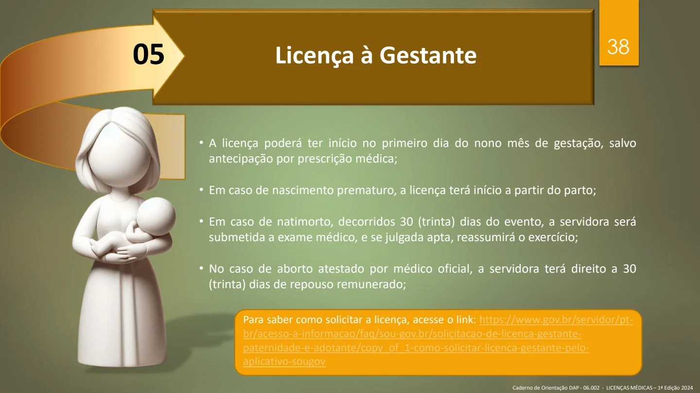
Licença à gestante
PDF · p. 39Caderno de Orientação DAP - 06.002 - LICENÇAS MÉDICAS – 1ª Edição 2024
• À servidora gestante, ocupante de apenas cargo em comissão, é assegurada licença-maternidade, sem
prejuízo do emprego e do salário, com duração de 120 dias. A remuneração durante esse período é de
responsabilidade do Regime Geral de Previdência Social, isto é, o INSS.
• No período da licença-maternidade às servidoras não poderão exercer qualquer atividade remunerada e a
criança não poderá ser mantida em creche ou organização similar, sob pena de perda do direito à
prorrogação, sem prejuízo do devido ressarcimento ao erário.
• A servidora poderá requerer a prorrogação da licença maternidade por mais 60 (sessenta dias).
• O pedido de prorrogação da licença deve ser protocolado, em até 30 (trinta) dias, após o nascimento da
criança.
Para saber como prorrogar a licença à gestante por Internação ADI 6327/2022, acesse o link:
https://www.gov.br/servidor/pt-br/acesso-a-informacao/faq/sou-gov.br/solicitacao-de-licenca-gestante-
paternidade-e-adotante/prorrogacao-licenca-gestante-por-internacao-adi-6327-2022
Para saber como encerrar a licença à gestante por Internação ADI 6327/2022, acesse o link:
https://www.gov.br/servidor/pt-br/acesso-a-informacao/faq/sou-gov.br/solicitacao-de-licenca-gestante-
paternidade-e-adotante/encerramento-da-licenca-gestante-por-internacao-adi-6327-2022
Ver página original — tabelas, imagens e diagramas
Licença paternidade
PDF · p. 4006 Licença Paternidade
Caderno de Orientação DAP - 06.002 - LICENÇAS MÉDICAS – 1ª Edição 2024
• A licença-paternidade possui duração de 5 (cinco) dias, com início a partir do dia
do nascimento do filho ou data da adoção;
• No caso de natimorto, entende-se pela impossibilidade de concessão, vez que, o
referido período é concedido à mãe com a finalidade de recuperação da mãe no
evento ocorrido;
• A prorrogação da licença paternidade, poderá ser concedida, caso o servidor
requeira o benefício no prazo máximo de dois dias úteis após o nascimento ou a
adoção.
• A prorrogação iniciará no dia subsequente ao término da licença paternidade
(após os cinco dias) e terá duração de 15 (quinze) dias.
• A prorrogação também é aplicável ao adotante ou ao servidor obtiver guarda
judicial para fins de adoção de criança;
Para saber como solicitar a licença, acesse o link: https://www.gov.br/servidor/pt-br/acesso-a-
informacao/faq/sou-gov.br/solicitacao-de-licenca-gestante-paternidade-e-adotante/copy_of_2-
como-solicitar-licenca-paternidade-pelo-aplicativo-sougov
Ver página original — tabelas, imagens e diagramas
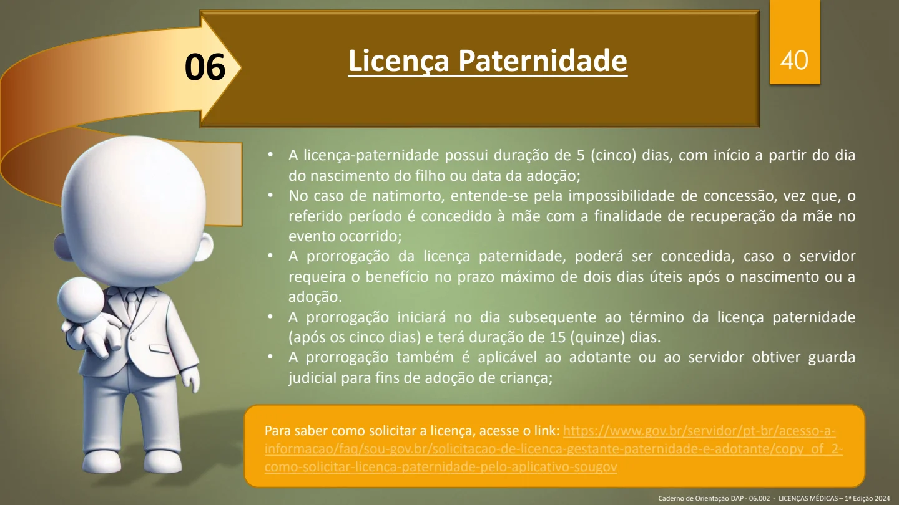
Licença paternidade
PDF · p. 41Caderno de Orientação DAP - 06.002 - LICENÇAS MÉDICAS – 1ª Edição 2024
• Considera-se criança a pessoa de até doze anos de idade incompletos para fins
de licença paternidade para pai adotante,
• A licença paternidade será considerada como efetivo exercício para todos os
fins e efeitos.
• É vedado exercer qualquer atividade remunerada durante a prorrogação da
licença paternidade, sob pena de cancelamento da prorrogação da licença e o
registro da ausência como falta ao serviço, nos termos do art. 3º do Decreto nº
8.737/2016. O descumprimento implicará o cancelamento da licença e o
registro da ausência como falta ao serviço.
• Nos casos de adoção por casal homo-afetivo, em que ambos sejam servidores
públicos federais, a licença à adotante será concedida somente a um dos
adotantes, sendo ao outro concedida a licença paternidade, nos termos do art.
208 da Lei nº 8.112/90, por analogia obrigatória aos casais heterossexuais.
Ver página original — tabelas, imagens e diagramas
Licença à adotante
PDF · p. 4207 Licença adotante
Caderno de Orientação DAP - 06.002 - LICENÇAS MÉDICAS – 1ª Edição 2024
• A licença adotante possui duração de 120 (cento e vinte) dias consecutivos, prorrogáveis a pedido do
agente público, por mais 60 (sessenta dias), resultando em um total de 180 (cento e oitenta) dias
consecutivos;
• O marco inicial da licença adotante ocorre a partir da data do Termo de Adoção ou do Termo de Guarda
e Responsabilidade da criança;
• A concessão tem início na data da ocorrência do fato gerador, independentemente de coincidir com
final de semana, feriado ou dia já trabalhado;
• Os prazos da licença adotante não podem ser inferiores aos prazos da licença à gestante, o mesmo
valendo para as respectivas prorrogações;
• No caso de haver mais de um servidor constante na filiação da criança, a licença adotante será
concedida a um dos adotantes, e ao outro poderá ser conferida licença paternidade/licença parental
equivalente ao prazo de licença paternidade;
• O adotante ocupante de cargo comissionado, sem vínculo efetivo com a Administração Pública Federal,
e as contratadas por tempo determinado terão a licença-gestante concedida nos termos do Regime
Geral de Previdência Social (RGPS);
Para saber como solicitar a licença, acesse o link: https://www.gov.br/servidor/pt-br/acesso-a-
informacao/faq/sou-gov.br/solicitacao-de-licenca-gestante-paternidade-e-adotante/copy_of_1-
como-solicitar-licenca-gestante-pelo-aplicativo-sougov
Ver página original — tabelas, imagens e diagramas
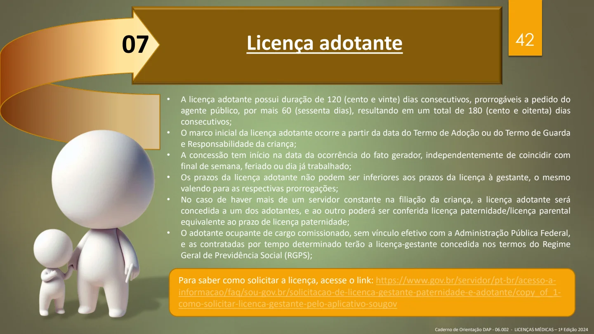
Contagem de tempo de serviço
PDF · p. 4308
Caderno de Orientação DAP - 06.002 - LICENÇAS MÉDICAS – 1ª Edição 2024
Os períodos de licença serão considerados como efetivo exercício,
EXCETO:
Nestes casos, o tempo será contado apenas para efeito de aposentadoria e disponibilidade.
A licença para tratamento da própria saúde,
SUPERIOR ao limite de vinte e quatro meses,
cumulativo ao longo do tempo de serviço público
prestado à União, em cargo de provimento efetivo.
A licença para tratamento de saúde de pessoal da
família do servidor, com remuneração, que EXCEDER
a 30 (trinta) dias em período de 12 (doze) meses.
Ver página original — tabelas, imagens e diagramas
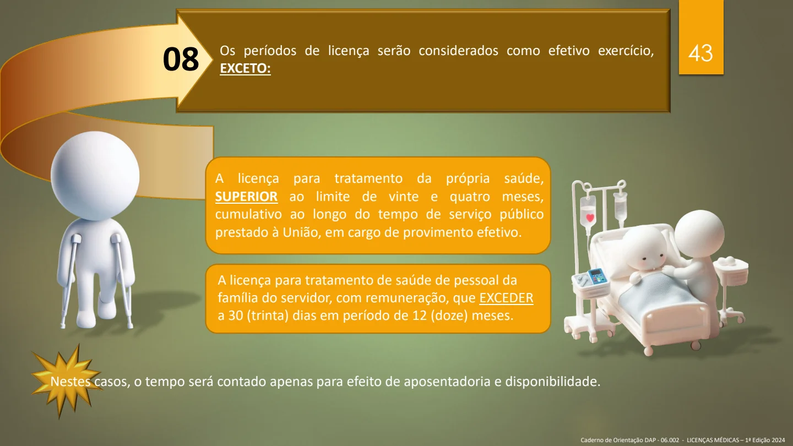
Registro da licença
PDF · p. 4409
Caderno de Orientação DAP - 06.002 - LICENÇAS MÉDICAS – 1ª Edição 2024
TRATAMENTO A SER DADO PARA O REGISTRO DA LICENÇA:
PERÍODO DA
LICENÇA ATESTADO PERÍCIA OFICIAL
SINGULAR JUNTA OFICIAL
120 dias em até 12
meses X
Mais de 120 dias X
Inferior a 15 dias
corridos e/ou até
14 dias em 12
meses
X
Atestado sem
especificação do
diagnóstico ou CID
X
Acidente em
serviço ou doença
profissional
X
Tabela 5: Registro da licença:
Ver página original — tabelas, imagens e diagramas
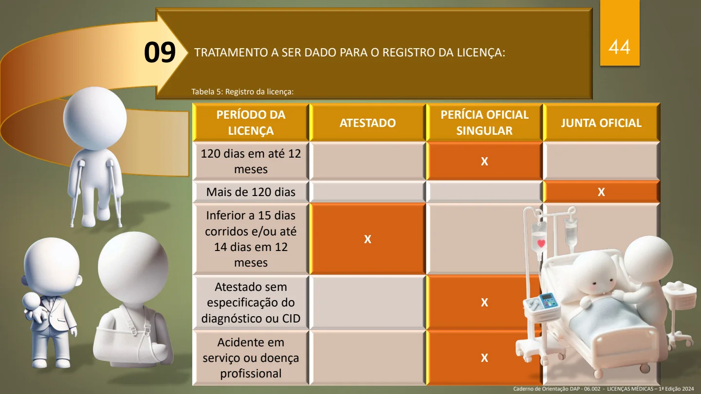
Documentos necessários
PDF · p. 45PARTE IV
DOS
DOCUMENTOS
NECESSÁRIOS
Caderno de Orientação DAP - 06.002 - LICENÇAS MÉDICAS – 1ª Edição 2024
Ver página original — tabelas, imagens e diagramas
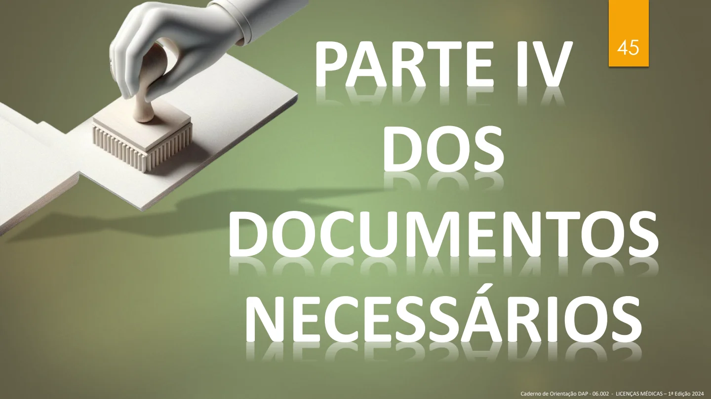
Documentos necessários
PDF · p. 461. LICENÇA PARA TRATAMENTO DE SAÚDE (LTS) E POR
MOTIVO DE DOENÇA EM PESSOA DA FAMÍLIA
DOCUMENTO RESPONSÁVEL PELA
EMISSÃO/ENVIO/ELABORAÇÃO OBSERVAÇÃO
Atestado médico, expedido por autoridade
competente, fornecido pelo servidor INTERESSADO
Deve ser entregue na OM ou,
preferencialmente, inserido no SouGov, em até
5 dias de sua emissão.
Requerimento INTERESSADO
Para licença por motivo de doença em pessoa da
família - Anexo J
(se o servidor tiver acesso ao SPED 3.0 durante a
licença, fazer o requerimento nesta ferramenta,
conforme modelo da página 53 deste Caderno -
REDIGINDO OS DOCUMENTOS NO SPED
(Requerimento e Informação)
Informação OM
No SPED 3.0, conforme modelo da página 53
deste Caderno - REDIGINDO OS DOCUMENTOS
NO SPED (Requerimento e Informação):
Ata de inspeção, elaborada e emitida pela
junta médica, quando for o caso OM OM agendará a inspeção de saúde conforme
indicações da Tabela 5 deste Caderno
Caderno de Orientação DAP - 06.002 - LICENÇAS MÉDICAS – 1ª Edição 2024Tabela 6: Documentos para LTS e para Licença por Motivo de Doença em Pessoa da Família:
Ver página original — tabelas, imagens e diagramas
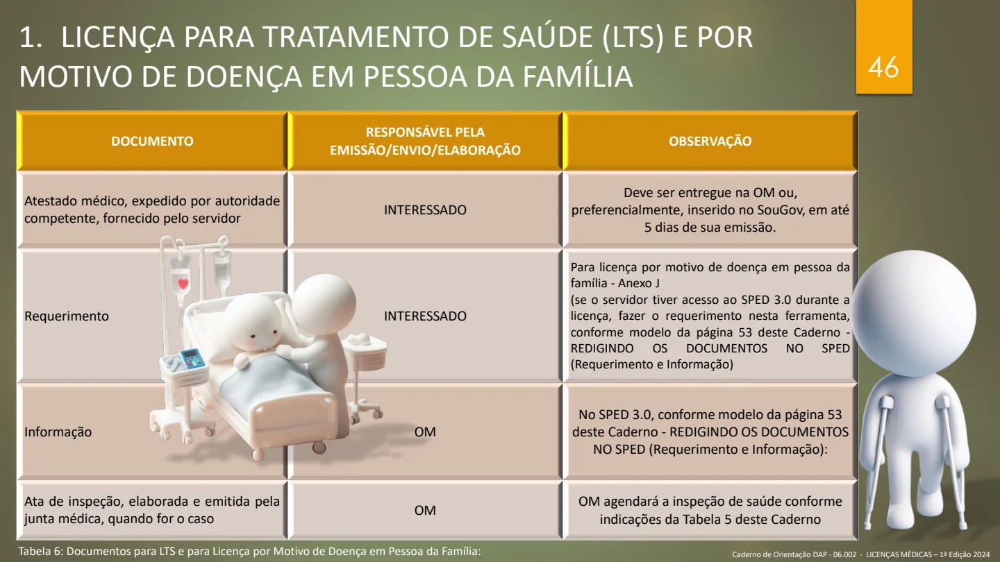
Documentos necessários
PDF · p. 472. LICENÇA À GESTANTE, À ADOTANTE E PATERNIDADE:
TIPO DA LICENÇA DOCUMENTO
RESPONSÁVEL PELA
EMISSÃO/ENVIO/ELABORA
ÇÃO
OBSERVAÇÕES
À gestante a) certidão de nascimento; e
b) atestado médico.
INTERESSADO Inserir no app do SouGov e
entregar na OM
Paternidade
a) termo de guarda e
responsabilidade, expedido
por autoridade competente;
ou
b) termo de adoção; ou
c) certidão de nascimento do
filho na qual conste como
pai o nome do servidor
requerente.
À adotante
a) termo de guarda e
responsabilidade, expedido
por autoridade competente;
ou
b) termo de adoção.
Caderno de Orientação DAP - 06.002 - LICENÇAS MÉDICAS – 1ª Edição 2024
Tabela 6: Documentos para licença à gestante, à adotante e paternidade:
Ver página original — tabelas, imagens e diagramas
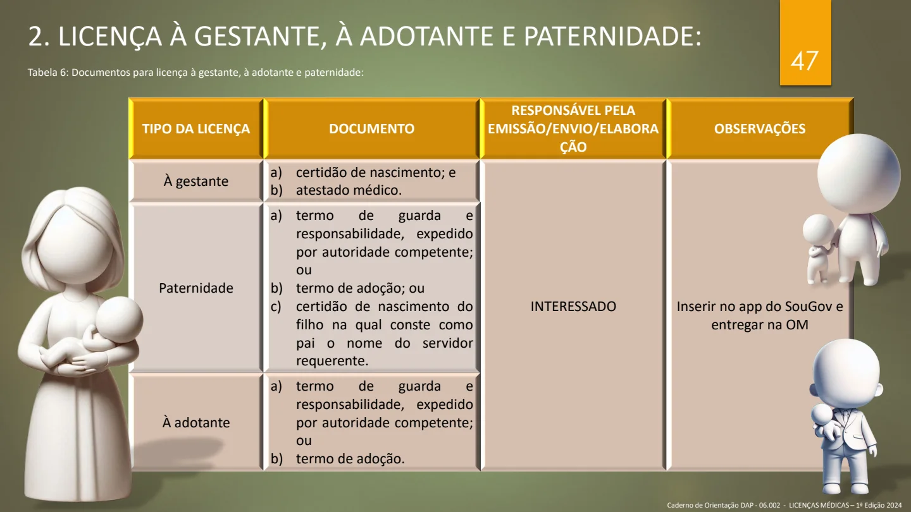
Documentos necessários
PDF · p. 483. LICENÇA POR ACIDENTE EM SERVIÇO:
DOCUMENTO RESPONSÁVEL PELA
EMISSÃO/ENVIO/ELABORAÇÃO OBSERVAÇÕES
Prova testemunhal OM ANEXO A
Prova técnica Médico Anexo B
Prova de autenticidade OM Anexo C
Inspeção de Saúde de Controle (ISC) Junta médica -
Exame de Controle de Atestado de Origem
(ECAO) Médico Anexo D
Inquérito Sanitário de Origem (ISO) Instaurado pelo Encarregado do
Inquérito Anexo E
Declarações elucidativas do paciente Integradas pelo Encarregado do
Inquérito Anexo F
Informações testemunhais Redigidas pelo Encarregado do
Inquérito Anexo G
Relatório Emitido pelo Encarregado do Inquérito Anexo H
Conclusões Proferidas pelo Encarregado do
Inquérito Anexo I
Caderno de Orientação DAP - 06.002 - LICENÇAS MÉDICAS – 1ª Edição 2024
Tabela 7: Documentos para Licença por Acidente em Serviço:
Ver página original — tabelas, imagens e diagramas
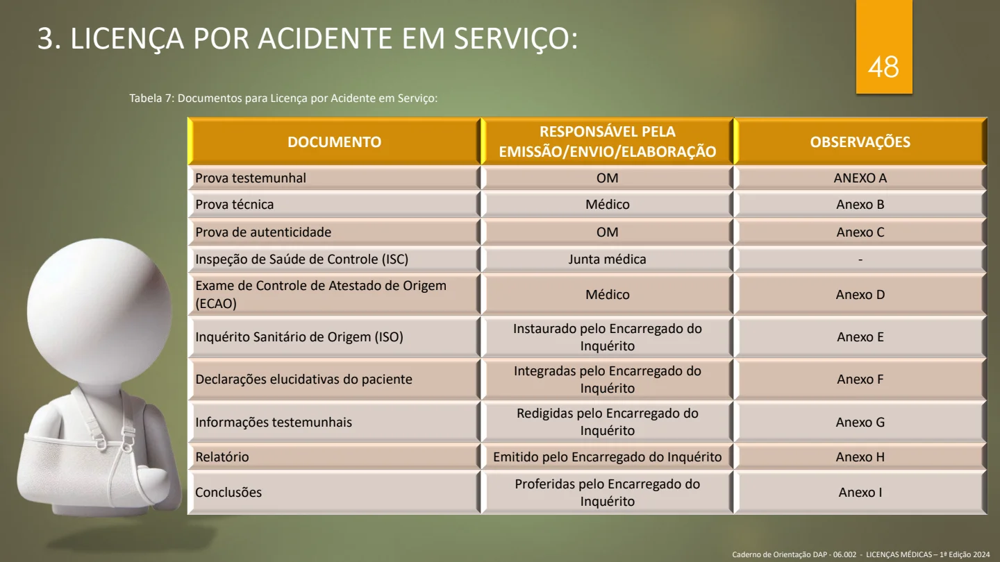
Tramitação interna
PDF · p. 49PARTE V
DA
TRAMITAÇÃO
INTERNA¹
Caderno de Orientação DAP - 06.002 - LICENÇAS MÉDICAS – 1ª Edição 2024¹Estes procedimentos não excluem a necessidade de inclusão do atestado no app do SouGov, conforme orientações deste caderno.
Ver página original — tabelas, imagens e diagramas
Tramitação interna
PDF · p. 50Caderno de Orientação DAP - 06.002 - LICENÇAS MÉDICAS – 1ª Edição 2024
Apresentar o atestado médico no setor
de pessoal civil de sua OM para fins de
comprovação de LTS.
Conceder a LTS e publicar a concessão
em Boletim Interno (BI).
Implantar no Sistema Integrado de
Servidores Civis (SISC) a data do início
e de retorno para controle.
Em se tratando de SERVIDOR EFETIVO,
submetê-lo ao Médico Perito da OM
ou à Junta de Inspeção de Saúde (JIS)
caso tenha ultrapassado, durante o
exercício, o limite de dias de licença
para tratamento da própria saúde
previstos na legislação vigente.
O SERVIDOR SEM VÍNCULO deverá fornecer
a certificação de sua ocupação em cargo
comissionado, bem como, a relação das
contribuições previdenciárias efetivadas
pelo mesmo, para fins de requerimento do
benefício correspondente junto ao INSS.
Implantar no Sistema Integrado de
Servidores Civis (SISC) a data do início e de
retorno para controle.
1. LICENÇA PARA TRATAMENTO DE SAÚDE (LTS):
SERVIDOR
OM
OM – SERVIDOR EFETIVO
OM – SERVIDOR SEM VÍNCULO¹
¹Seguir esta orientação para todas as licenças.
Ver página original — tabelas, imagens e diagramas
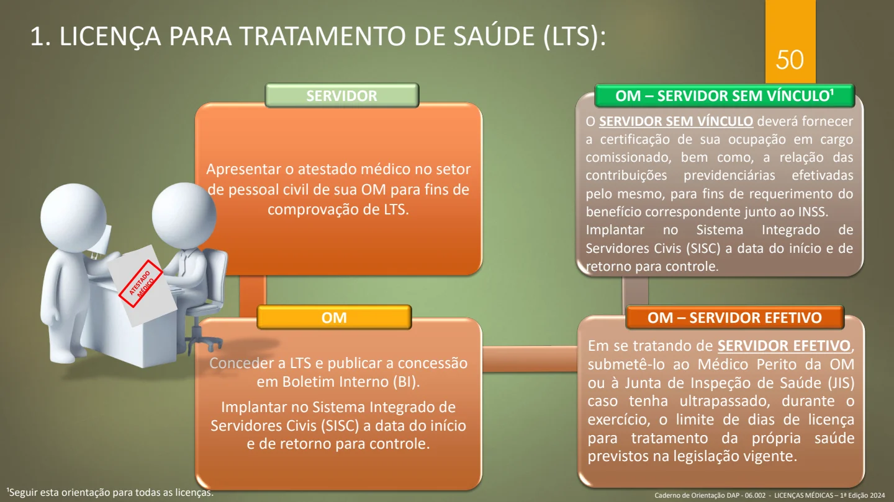
Tramitação interna
PDF · p. 51Caderno de Orientação DAP - 06.002 - LICENÇAS MÉDICAS – 1ª Edição 2024
Comunicar a OM e apresentar o atestado
médico no setor de pessoal civil de sua
OM, no prazo de até 10 (dez) dias, para
fins de comprovação de LTS.
1. O Cmt, Ch ou Dir da OM ao receber comunicação da ocorrência de um acidente em serviço com servidor civil,
deverá:
a) Ouvir o médico sobre a necessidade do AO.
b) Em caso afirmativo, mandar lavrar o AO, sendo que as 3 primeiras partes serão obrigatoriamente preenchidas, em
até 10 (dez) dias após a publicação da solução da Sindicância.
c) publicar o AO em BI;
d) arrolar testemunhas;
e) providenciar o preenchimento da prova; e
f) após proceder a todas as diligências e obter o
parecer da junta médica, conceder a licença ao servidor.
2. Implantar no Sistema Integrado de Servidores Civis (SISC) a data do início e de retorno para controle.
2. LICENÇA POR ACIDENTE EM SERVIÇO:
SERVIDOR
OM
Ver página original — tabelas, imagens e diagramas
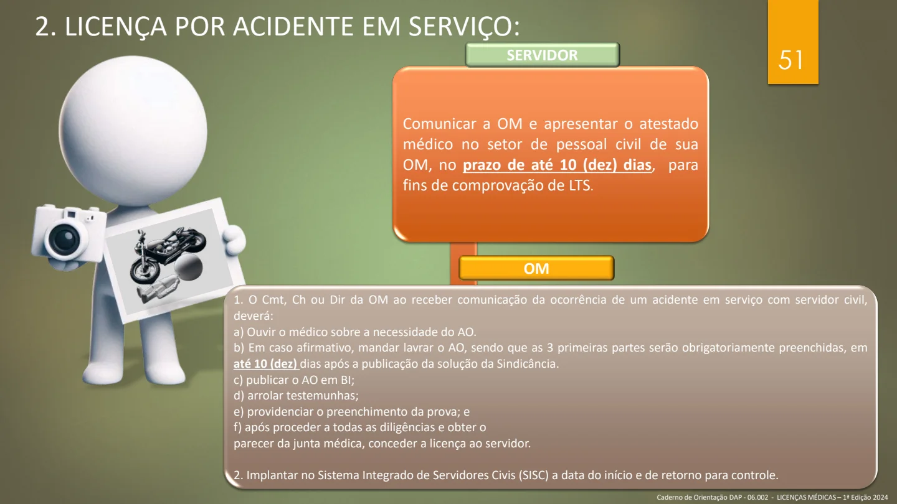
Tramitação interna
PDF · p. 52Caderno de Orientação DAP - 06.002 - LICENÇAS MÉDICAS – 1ª Edição 2024
Apresentar atestado e instruir
processo com requerimento¹ (ANEXO
J) de licença por motivo de doença em
pessoa da família
1. Elaborar a Informação, no SPED 3.0, conforme modelo da próxima
página.
2. Encaminhar o requerente à Junta de Inspeção de Saúde para o exame
médico da pessoa de sua família (Anexo A)
3. Publicar, em Boletim Interno (BI), a concessão da licença.
4. Publicar, em Boletim Interno (BI), a concessão da licença.
5. Implantar no Sistema Integrado de Servidores Civis (SISC)
a data do início e de retorno para controle.
3. LICENÇA POR MOTIVO DE DOENÇA EM PESSOA DA FAMÍLIA:
SERVIDOR
OM
¹ Se o servidor tiver acesso ao SPED 3.0, fazer o requerimento nesta
ferramenta, conforme modelo da página 53 deste Caderno - REDIGINDO
OS DOCUMENTOS NO SPED (Requerimento e Informação)
Ver página original — tabelas, imagens e diagramas
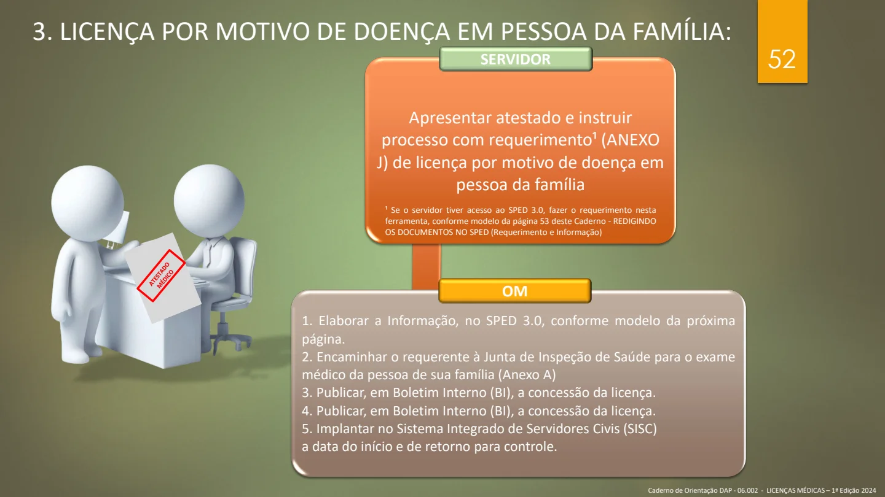
Tramitação interna
PDF · p. 534. REDIGINDO OS DOCUMENTOS NO SPED
(Requerimento e Informação):
1
2
4
5
Requerimento Informação
3
6
Ver página original — tabelas, imagens e diagramas
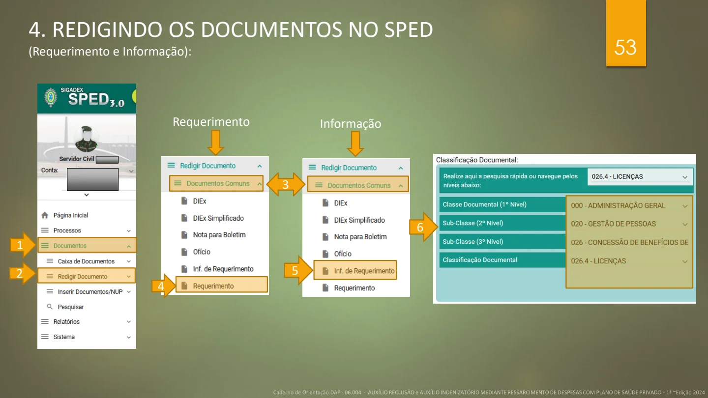
Tramitação interna
PDF · p. 54Caderno de Orientação DAP - 06.002 - LICENÇAS MÉDICAS – 1ª Edição 2024
Fazer o requerimento (ANEXO J)
Apresentar os documentos exigidos
1. Receber o requerimento
2. Elaborar informação (conforme modelo da página 53)
3. Analisar o mérito e conceder ou indeferir.
4. Publicar em Boletim Interno (BI) o período de licença.
5. Implantar no Sistema Integrado de Servidores Civis
(SISC) a data do início e de retorno para controle.
6. Implantar no Sistema Integrado de Administração de
Pessoal (SIAPE)
5. CONCESSÃO E PRORROGAÇÃO DA LICENÇA À GESTANTE, À
ADOTANTE E PATERNIDADE:
SERVIDOR
OM
Ver página original — tabelas, imagens e diagramas
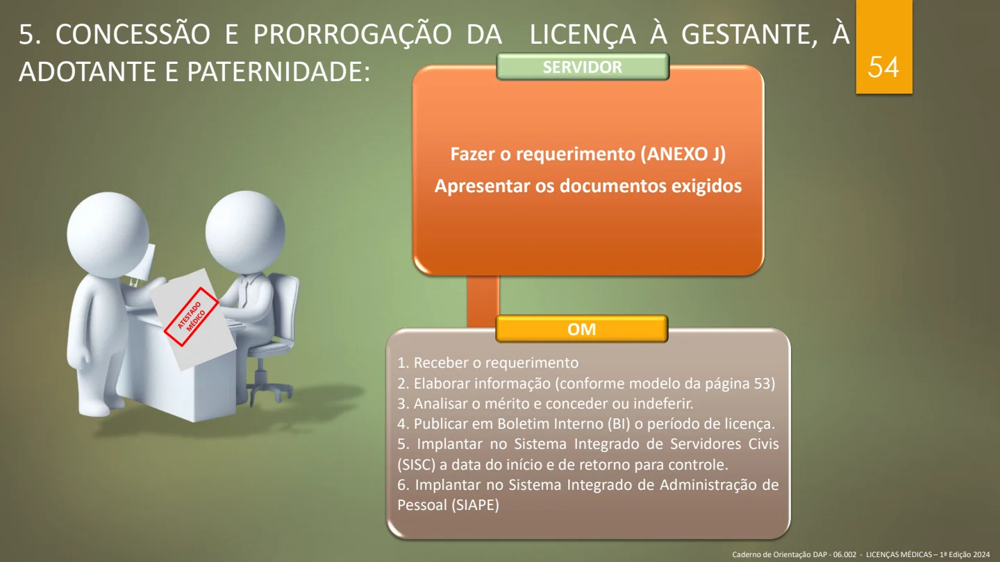
Fontes e elaboração
PDF · p. 55ELABORAÇÃO:
ASSESSORIA TÉCNICA DA SPC/DAP
SETEMBRO DE 2024
Caderno de Orientação DAP - 06.002 - LICENÇAS MÉDICAS – 1ª Edição 2024
Para conhecer melhor o assunto,
leia as legislações indicadas no início deste caderno, disponíveis no link:
https://legis.sigepe.gov.br/legis/pesquisa-avancada
Ver página original — tabelas, imagens e diagramas
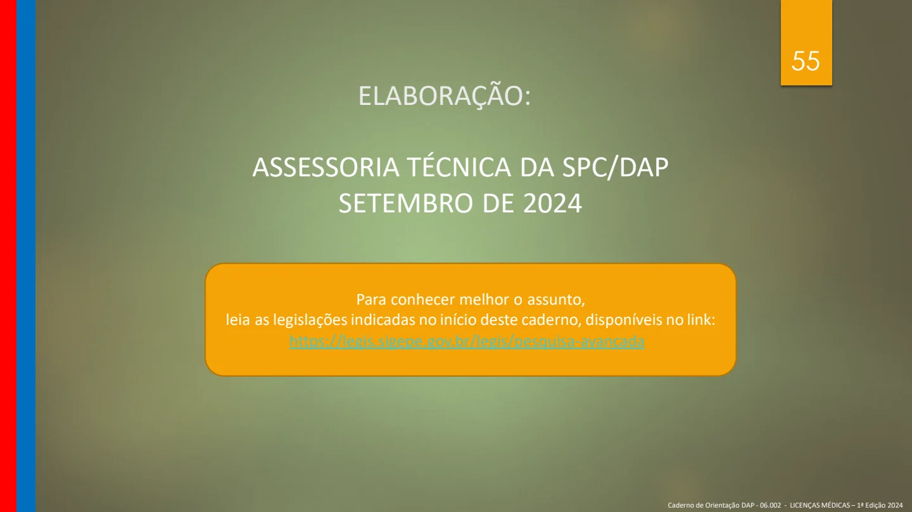